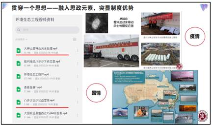
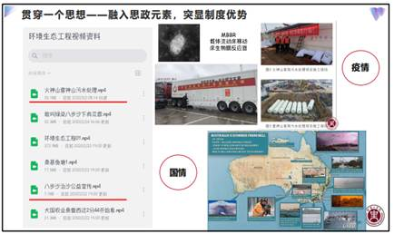

“一场疫情，不经意间引领了高等教育教学模式的变革，实现了现代信息技术与教育教学工作的深度融合，这一特殊的挑战和考验，也是我们通过新视角进入新境界的一次新的教学旅程”，唐多毅副校长在指导能环学院线上教学工作时说。疫情发生以来，在学校的统一部署，在联系校领导唐多毅副校长指导下，能环学院提前谋划、积极准备，通过积极发挥基层教学组织作用、开展线上微课比赛、组织获奖教师经验交流，加强教学督导等多措并举，有力地保证了线上教学质量。
首先，学院于线上教学准备期、试运行期，分别组织各专业系室开展教研活动，充分发挥基层教学组织的作用，使其真正回归教研。大家围绕特殊时期如何提高线上教学质量和学生学习效果，开展了内容丰富的教学研讨，大家交流好做法、借鉴好经验，共同分析问题，寻找解决方法。如对授课平台的掌握，做到精通1个、熟悉多个，授课时做好一用一备等预案，确保了在线教学运行的顺利。老师们快速从开始的紧张应对变得从容驾驭线上教学活动，完全实现了延迟开学不停课，不停学的目标。
为进一步激发大家线上教学热情，提高在线教学效果，也为了把教师们的线上教学精彩瞬间与大家分享，学院组织开展了线上教学微课比赛。老师们参赛非常踊跃，纷纷提交了自己在线授课视频。经组织专家评审，最后评出获奖作品11项，比赛对固化线上教学已取得成果起到了积极地推动作用。
为巩固前期线上教学经验，继续在保证正常线上教学秩序的基础上提高教学效果，学院及时召开了全体教职工参加的线上教学经验交流会，唐多毅副校长带领教务处穆云超处长、研究生处孙玉周处长、教育教学质量评估中心李春广主任、现代教育技术中心张书钦主任参加了会议。
会上，六位教师分别从如何发挥好基层教学组织作用，研究生课程的教学模式探索，融入思政元素、创新案例教学，加强与学生互动、提高线上教学效果，疫情条件下如何快速搭建一门在线课程，及巧用教学法、推动线上教学等方面，和大家做了线上教学经验分享。
 

唐多毅副校长对老师们的发言进行了精彩点评，对学院前期线上教学工作取得的成绩进行了充分的肯定，对老师们克服困难，有效实施线上教学工作表示感谢，并对下一步如何更好地实施线上教学工作提出了要求。唐校长指出，要在前期有效实施线上教学的基础上，精准施教，有的放矢，进一步提高线上教学质量，要求老师们将内容讲精，重点讲深，要点讲透，坚持把问题导向作为聚焦点、把目标导向作为着力点、把成果导向作为落脚点，紧密结合学科专业特点，树立集成意识和质量意识，以进一步提高线上教育教学质量为根本目标，为学校一流本科建设注入新的活力。